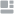

<section class="mobile-menu">
    <nav class="mobile-menu__nav">
        <ul class="mobile-menu__list">
            <li class="mobile-menu__item" matTooltip="Go to Home"><a class="mobile-menu__link" routerLink="/"></a></li>
            @if(userRole === 'student' || userRole === 'studentTeacher') {
                <li class="mobile-menu__item" matTooltip="Go to Tasks"><a class="mobile-menu__link" routerLink="/Tasks"></a></li>
            }
            @if(userRole === 'teacher' || userRole === 'studentTeacher') {
                <li class="mobile-menu__item" matTooltip="Go to Subjects"><a class="mobile-menu__link" routerLink="/Subjects"></a></li>
            }
            <li class="mobile-menu__item" matTooltip="View Profile"><a class="mobile-menu__link" routerLink="/Profile"></a></li>
            <li class="mobile-menu__item" matTooltip="Contact Info"><a class="mobile-menu__link" routerLink="/Contact"></a></li>
        </ul>
    </nav>
</section>
